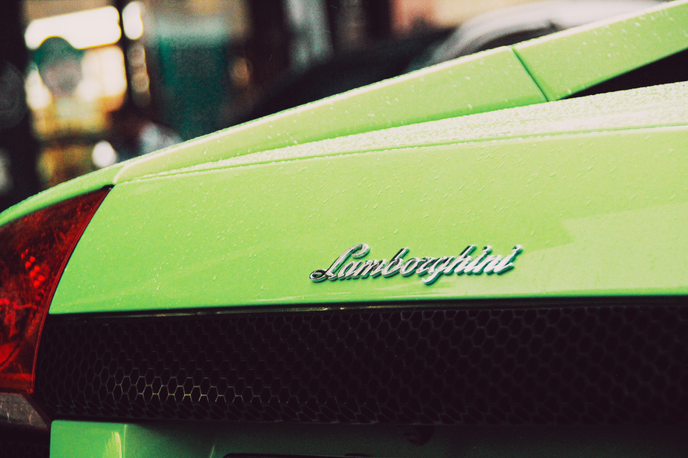
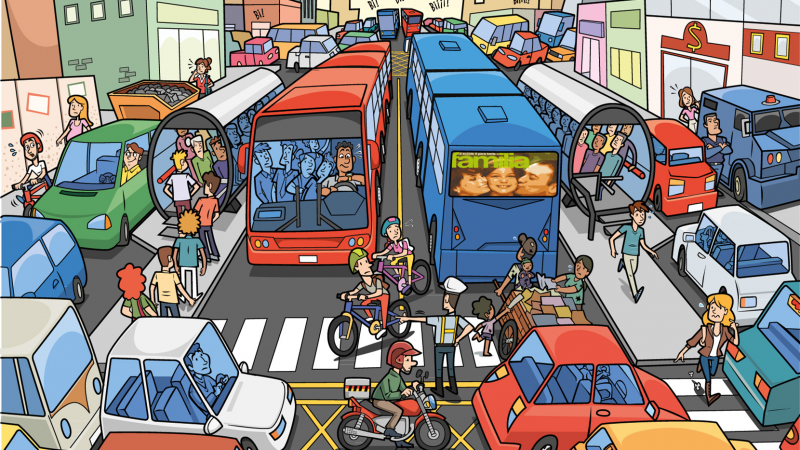

Közlekedés Hétköznapokban
valami repülőkről
A technológiai fejlődés jelentős változásokat hozott a közlekedésben. Az elektromos autók, az önvezető járművek és az okos közlekedési rendszerek mind hozzájárulnak ahhoz, hogy a közlekedés biztonságosabbá és hatékonyabbá váljon. Ugyanakkor ezek az újítások új kihívásokat is jelentenek, például az infrastruktúra fejlesztésének szükségességét és a szabályozási kérdéseket.Fontos szempont a fenntarthatóság is. A hagyományos közlekedési módok, különösen a fosszilis üzemanyagokat használó járművek, jelentős mértékben hozzájárulnak a légszennyezéshez és a klímaváltozáshoz. Ezért egyre nagyobb hangsúlyt kapnak a zöld megoldások, például a tömegközlekedés fejlesztése, a kerékpárutak kiépítése és az alternatív energiaforrások használata.

Az autóhasználat környezeti hatásai

A közlekedés fenntarthatósági szempontból komoly kihívást jelent, mivel számos formája hozzájárul a környezeti terheléshez. Az autóhasználat során keletkező károsanyag-kibocsátás jelentős, azonban fontos hangsúlyozni, hogy nem ez az egyetlen vagy feltétlenül a legnagyobb probléma. A különböző közlekedési módok eltérő hatással vannak a környezetre: például a légi közlekedés gyakran nagyobb ökológiai lábnyommal jár, míg a kerékpározás és a gyaloglás fenntarthatóbb alternatívát kínálnak. A fenntartható közlekedés kulcsa abban rejlik, hogy tudatos döntéseket hozunk, és lehetőség szerint előnyben részesítjük az alacsonyabb környezeti terheléssel járó megoldásokat.
valami biciklikről
A technológiai fejlődés jelentős változásokat hozott a közlekedésben. Az elektromos autók, az önvezető járművek és az okos közlekedési rendszerek mind hozzájárulnak ahhoz, hogy a közlekedés biztonságosabbá és hatékonyabbá váljon. Ugyanakkor ezek az újítások új kihívásokat is jelentenek, például az infrastruktúra fejlesztésének szükségességét és a szabályozási kérdéseket.Fontos szempont a fenntarthatóság is. A hagyományos közlekedési módok, különösen a fosszilis üzemanyagokat használó járművek, jelentős mértékben hozzájárulnak a légszennyezéshez és a klímaváltozáshoz. Ezért egyre nagyobb hangsúlyt kapnak a zöld megoldások, például a tömegközlekedés fejlesztése, a kerékpárutak kiépítése és az alternatív energiaforrások használata.

valami gyaloglásról
A közlekedés fenntarthatósági szempontból komoly kihívást jelent, mivel számos formája hozzájárul a környezeti terheléshez. Az autóhasználat során keletkező károsanyag-kibocsátás jelentős, azonban fontos hangsúlyozni, hogy nem ez az egyetlen vagy feltétlenül a legnagyobb probléma. A különböző közlekedési módok eltérő hatással vannak a környezetre: például a légi közlekedés gyakran nagyobb ökológiai lábnyommal jár, míg a kerékpározás és a gyaloglás fenntarthatóbb alternatívát kínálnak. A fenntartható közlekedés kulcsa abban rejlik, hogy tudatos döntéseket hozunk, és lehetőség szerint előnyben részesítjük az alacsonyabb környezeti terheléssel járó megoldásokat.